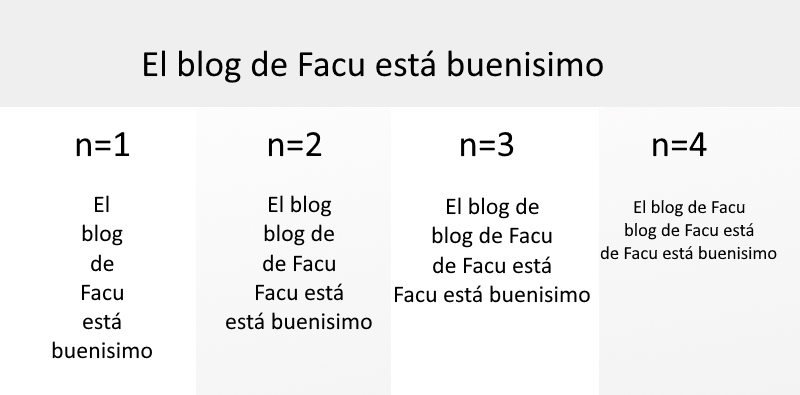

LLM es un “modelo de lenguaje grande” (por sus siglas en inglés), un tipo de programa de inteligencia artificial (IA) que puede procesar y generar texto, entre otras tareas relacionadas con el lenguaje natural.
ChatGPT y otros modelos generativos pre-entrenados son los primeros que vienen a la mente cuando pensamos en LLMs. Y aunque mucha gente interactúa con estos modelos a diario, pocos comprenden realmente cómo funcionan. El objetivo de este post es que todos podamos entender sus principios básicos.
Hasta hace unos pocos años el procesamiento de lenguaje natural (usar computadoras para tareas relacionadas al lenguaje) era una tarea que se apoyaba 100% en el uso de la estadística. Usando información estadística de un idioma en particular, se podía crear un algoritmo como el modelo de n-gramas , que predice la siguiente palabra en una secuencia en base a las anteriores.
Si bien estos modelos eran simples y eficaces en tareas básicas como la corrección ortográfica o el reconocimiento de voz, su capacidad de comprensión era muy limitada. (es por definición una cadena de Markov de orden n-1, pero los detalles de cómo se calcula exceden este post).
Cerca del 2010, se empieza a utilizar una herramienta muy útil para el procesamiento de lenguaje natural que consiste básicamente en tratar de representar palabras y/o frases como “vectores numéricos”. Una de las técnicas más reconocidas de Word-Embedding es Word2Vec, desarrollada por un equipo de google en el 2013, que representa cualquier palabra del idioma inglés en un vector de 300 dimensiones y luego nos permite calcular una “distancia” entre estos vectores para saber qué tan similares son dos palabras entre sí.
Por ejemplo, las palabras “perro”, “cachorro” y “can” son muy parecidas en su significado (prácticamente sinónimos), mientras que una palabra como “gato” no es un sinónimo pero podría aparecer en la misma posición en una oración (no está tan “lejos”) y la palabra “viajar” seguramente esté muy lejos en ese espacio vectorial.
Este cambio permite que un modelo de lenguaje entienda palabras similares en significado como equivalentes, mejorando exponencialmente el potencial de los modelos, de repente “pájaro” y “volar” son reconocidas por estos modelos matemáticos como parecidas no por su uso en una oración, sino por su significado.
Desde el 2017, el tipo de modelo más utilizado se conoce como “transformador”, son modelos de aprendizaje profundo que mediante el uso de redes neuronales recurrentes ponderan cuánta “atención” prestarle a cada palabra de un texto, con esto revolucionando el campo de procesamiento de lenguaje.
Su clave está en el mecanismo de atención, que permite al modelo enfocarse en las partes más relevantes del texto, sin importar la distancia entre palabras. Esta arquitectura dio lugar a los transformers generativos pre-entrenados (GPTs), donde podemos partir de una red neuronal ya entrenada para darle un uso general o refinar a un uso específico requerido.
En el 2022 OpenAi lanza al público chatGPT, un chatbot entrenado con una enorme cantidad de información (por eso les dicen modelos de lenguajes grandes) que permite generar texto siguiendo una instrucción (o prompt) escrita también en lenguaje natural.
Al momento de escribir esto la última mejora a estos modelos es el concepto de RAG. Antes se hablaba de dos tipos de modelos de lenguajes con funcionalidades muy distintas, modelos de recuperación y modelos generativos.
Un ejemplo de modelo generativo es chatGPT 3.0, que con una instrucción simple era capaz de generar texto con todo lo que mencionamos hasta ahora, entrenado en una gran cantidad de textos de ejemplo. Por otro lado un modelo de recuperación tiene una funcionalidad más específica, y es encontrar en una base de datos alguna información que solicitamos, similar a lo que hacía la encarta de Microsoft para traer resultados relevantes a lo que escribimos, pero haciendo una búsqueda más compleja, semántica y contextualizada.
El modelo RAG (Retrieval-Augmented Generation) combina ambas estrategias, y nos permite generar texto usando un modelo pre-entrenado, agregando en tiempo real fuentes nuevas.
En resumen, los modelos de lenguaje han pasado de simples predicciones estadísticas a sistemas sofisticados capaces de entender, generar y razonar con texto. Con avances como RAG, el futuro del lenguaje automatizado parece cada vez más integrado a nuestras vidas cotidianas, desde búsquedas hasta asistentes inteligentes.